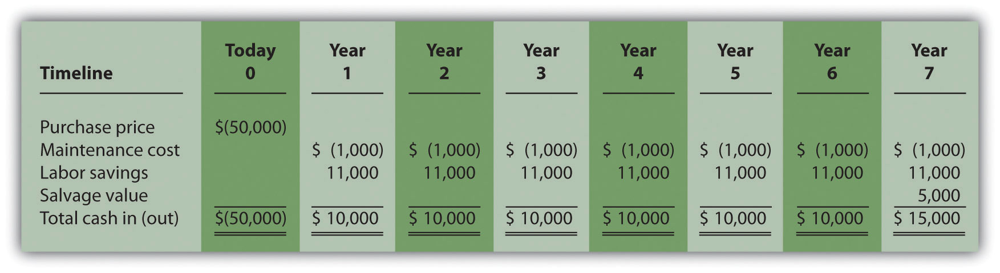
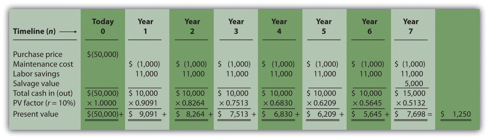
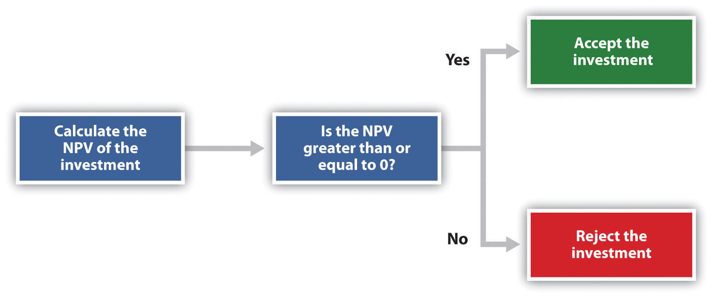
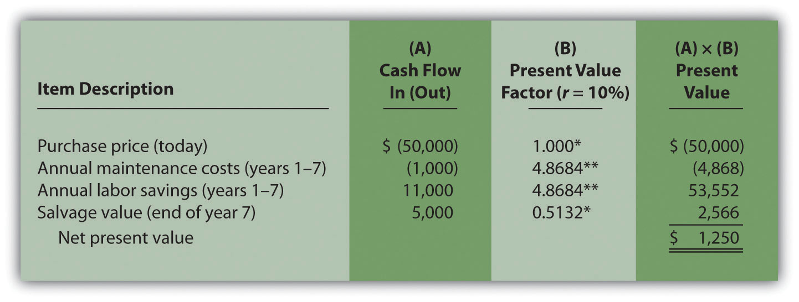
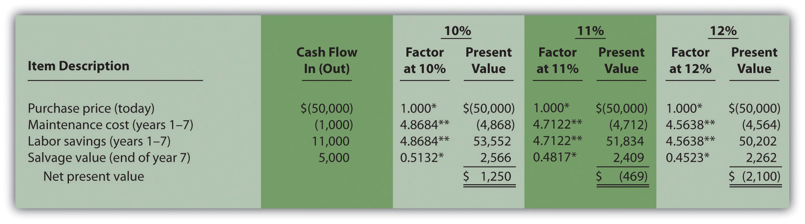
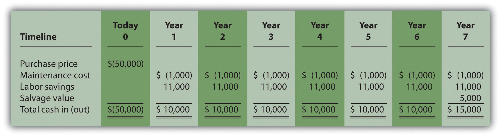
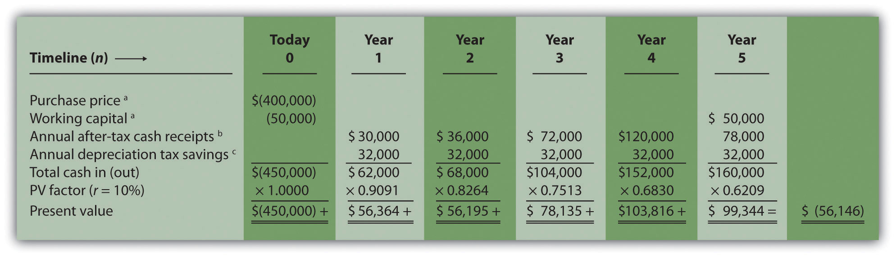
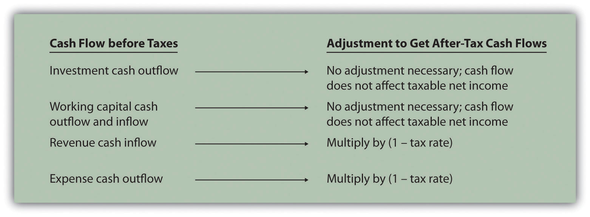
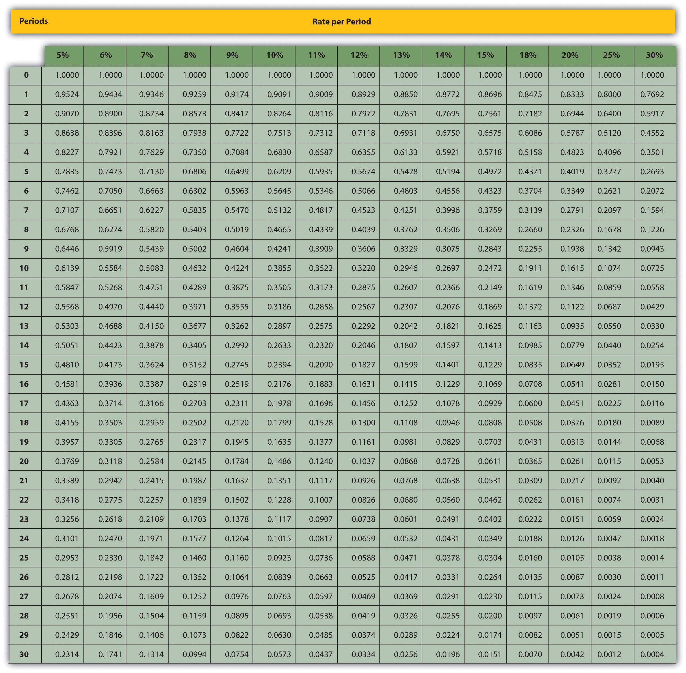
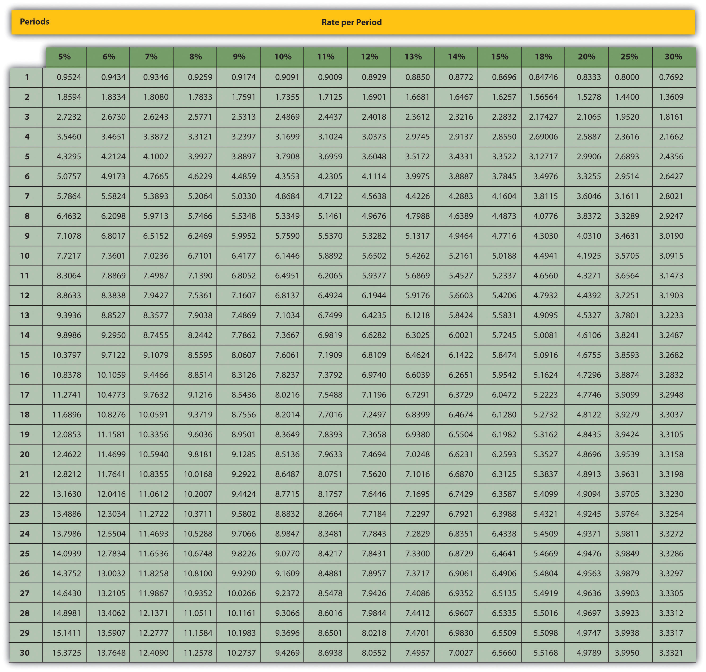

Julie Jackson is the president and owner of Jackson’s Quality Copies, a store that makes photocopies for its customers and that has several copy machines. Julie has the following discussion with Mike Haley, the company’s accountant:
| Julie: | Mike, I think it’s time to buy a new copy machine. Our volume of copies has increased dramatically over the last year, and we need a copier that does a better job of handling the big jobs. |
| Mike: | Do you have any idea how much the new machine will cost? |
| Julie: | We can purchase a new copier for $50,000, maintenance costs will total $1,000 a year, and the copier is expected to last 7 years. Since the new machine is quicker and will require less attention by our employees, we should save about $11,000 a year in labor costs. |
| Mike: | Will it have any salvage value at the end of seven years? |
| Julie: | Yes. The salvage value should be about $5,000. |
| Mike: | How soon do you want to do this? |
| Julie: | As soon as possible. From what I can tell, this is a winning proposition. The cash inflows of $82,000 that we will get from the labor cost savings and the salvage value exceed the cash outflows of $57,000 that we expect to spend on the machine and annual maintenance costs. What do you think? |
| Mike: | Let me take a look at the numbers before we jump into this. We have to consider more than just total cash inflows and outflows. I’ll get back to you by the end of the week. |
| Julie: | Okay, thanks for your help! |
Jackson’s Quality Copies is facing a decision common to many organizations: whether to invest in equipment that will last for many years or to continue with existing equipment. This type of decision differs from the decisions covered in the previous chapter because long-term investment decisions affect organizations for several years. We will return to Julie’s plan to purchase a new copier after we provide background information on long-term investment decisions.
Question: What is the difference between management decisions made in Chapter 7 "How Are Relevant Revenues and Costs Used to Make Decisions?" and management decisions made in this chapter?
Answer: The types of decisions covered in this chapter and Chapter 7 "How Are Relevant Revenues and Costs Used to Make Decisions?" are similar in that they require an analysis of differential revenues and costs. However, Chapter 7 "How Are Relevant Revenues and Costs Used to Make Decisions?" involves short-run operating decisions (e.g., special orders from customers), while this chapter focuses on long-run capacity decisions (e.g., purchasing long-lived assets to increase capacity for many years).
Organizations make a variety of long-run investment decisions. The San Francisco Symphony invests in stage risers for its orchestra members. McDonald’s invests in new restaurants. Honda Motor Co. invests in new manufacturing facilities. Bank of America invests in new branches. These examples have one common feature: all of these companies are investing in assets that will affect the organization for several years.
Question: The process of analyzing and deciding which long-term investments to make is called a capital budgeting decisionThe process of analyzing and deciding which long-term investments (or capital expenditure decision) to make., also known as a capital expenditure decision. Capital budgeting decisions involve using company funds (capital) to invest in long-term assets. How does the evaluation of these types of capital budgeting decisions differ from short-term operating decisions discussed in Chapter 7 "How Are Relevant Revenues and Costs Used to Make Decisions?"?
Answer: When looking at capital budgeting decisions that affect future years, we must consider the time value of money. The time value of money concept is the premise that a dollar received today is worth more than a dollar received in the future. To clarify this point, suppose a friend owes you $100. Would you prefer to receive $100 today or 3 years from today? The money is worth more to you if you receive it today because you can invest the $100 for 3 years.
For capital budgeting decisions, the issue is how to value future cash flows in today’s dollars. The term cash flowThe amount of cash received or paid at a specific point in time. refers to the amount of cash received or paid at a specific point in time. The term present valueThe term used to describe future cash flows (both in and out) in today’s dollars. describes the value of future cash flows (both in and out) in today’s dollars.
Capital Budgeting Decisions at JCPenney and Kohl’s
JCPenney Company has over 1,000 department stores in the United States, and Kohl’s Corporation has over 800. Both companies cater to a “middle market.” In October 2006, Kohl’s announced plans to open 65 new stores. At about the same time, JCPenney announced plans to open 20 new stores, 17 of which would be stand-alone stores. This was a departure from JCPenney’s typical approach of serving as an anchor store for regional shopping malls.
The decision to open new stores is an example of a capital budgeting decision because management must analyze the cash flows associated with the new stores over the long term.
Source: James Covert, “Chasing Mr. and Mrs. Middle Market: J.C. Penney, Kohl’s Open 85 New Stores,” The Wall Street Journal, October 6, 2006.
When managers evaluate investments in long-term assets, they want to know how much cash would be spent on the investment and how much cash would be received as a result of the investment. The investment proposal is likely rejected if cash inflows do not exceed cash outflows. (Think about a personal investment. If you would receive only $700 in the future from an investment of $1,000 today, you undoubtedly would not make the investment because you would lose $300!) If cash inflows are expected to exceed cash outflows, managers must consider when the cash inflows and outflows occur before taking on the investment. (Again, consider an investment of $1,000 today. If you expect to receive $1,050 in 20 years rather than at the end of 1 year, you would probably think twice before investing because it would take 20 years to make $50!)
Question: We use two methods to evaluate long-term investments, both of which consider the time value of money. What are these two methods?
Answer: The first is called the net present value (NPV) method, and the second is called the internal rate of return method. Before presenting these two methods, let’s discuss the time value of money (present value) concepts.
Question: Suppose you invest $1,000 for 1 year at an interest rate of 5 percent per year, as shown in the following timeline. How much will you have at the end of 1 year (or what is the future value of the investment)?
Answer: You will have $1,050:
$1,050 = $1,000 × (1 + .05)
Question: Let’s change course and find the present value of the same future cash flow. If you receive $1,050 in 1 year, how much is that worth in today’s dollars assuming an annual interest rate of 5 percent?
Answer: The present value is $1,000, calculated as follows:
Question: Let’s go back to finding a future value. Assume you invest $1,000 today at an annual rate of 5 percent for 2 years. How much will you have at the end of 2 years?

Answer: At the end of 1 year, you will have $1,050 (= $1,000 × [1 + .05]). At the end of the second year, you will have $1,102.50, which is $1,050 × (1 + .05). The equation is
$1,102.50 = $1,000 × (1 + .05) × (1 + .05) or $1,102.50 = $1,000 × (1 + .05)2
Question: Again, let’s change course and find the present value of the same future cash flow. If you receive $1,102.50 in 2 years, how much is that worth in today’s dollars assuming an annual interest rate of 5 percent?
Answer: The present value is $1,000, calculated as follows:
These examples show that one equation can be used to find the present value of a future cash flow. The equation is
where
P = Present value of an amount Fn = Amount received n years in the future r = Annual interest rate n = Number of years
Question: Let’s use this formula to solve for the following: Assume $500 will be received 4 years from today, and the annual interest rate is 10 percent. What is the present value of this cash flow?
Answer: The present value is $341.51, calculated as follows:
Question: Although most managers use spreadsheets, such as Excel, to perform present value calculations (discussed later in this chapter), you can also use the present value tables in the appendix to this chapter, labeled Figure 8.9 "Present Value of $1 Received at the End of " and Figure 8.10 "Present Value of a $1 Annuity Received at the End of Each Period for ", for these calculations. Figure 8.9 "Present Value of $1 Received at the End of " simply provides the present value of $1 (i.e., F = $1) given the number of years (n) and the interest rate (r). How are these tables used to calculate present value amounts?
Answer: Let’s look at an example to see how these tables work. Assume $1 will be received 4 years from today (n = 4), and the interest rate is 10 percent (r = 10 percent). What is the present value of this cash flow? Look at Figure 8.9 "Present Value of $1 Received at the End of " in the appendix. Find the column labeled 10 percent and the row labeled 4. The present value is $0.6830, or $0.68 rounded. The table amount given is often called a factor. The factor in this example is 0.6830 (note that the formula to find this factor is shown at the top of Figure 8.9 "Present Value of $1 Received at the End of ").
Now assume all the same facts, except that $500 rather than $1 will be received in 4 years. To find the present value, simply multiply the factor found in Figure 8.9 "Present Value of $1 Received at the End of " by $500, as follows:
Notice that this present value is the same as the one we calculated using the formula P = Fn ÷ (1 + r)n, with the exception of a small difference due to rounding the factor in Figure 8.9 "Present Value of $1 Received at the End of ". Next, we use present value concepts to evaluate projects with the NPV method.
Present value calculations tell us the value of future cash flows in today’s dollars. The present value of a cash flow can be calculated by using the formula P = Fn ÷ (1 + r)n. It can also be calculated by using the tables in the appendix of this chapter. Simply find the factor in Figure 8.9 "Present Value of $1 Received at the End of " given the number of years (n) and annual interest rate (r). Then multiply the factor by the future cash flow, as follows:
Present value = Amount received in the future × Present value factorFor each of the following independent scenarios, calculate the present value of the cash flow described. Round to the nearest dollar.
Solution to Review Problem 8.1
Two approaches can be used to find the present value of a cash flow. The first requires using the formula P = Fn ÷ (1 + r)n. The second requires using Figure 8.9 "Present Value of $1 Received at the End of " in the appendix to find the present value factor and inserting it in the following formula:
Present value = Amount received in the future × Present value factor (from Figure 8.9 "Present Value of $1 Received at the End of ")We show both approaches in the following solutions.
Using the formula P = Fn ÷ (1 + r)n, we get
Using Figure 8.9 "Present Value of $1 Received at the End of ", we get
Using the formula P = Fn ÷ (1 + r)n, we get
Using Figure 8.9 "Present Value of $1 Received at the End of ", we get
The small difference between the two approaches is due to rounding the factor in Figure 8.9 "Present Value of $1 Received at the End of ".
Using the formula P = Fn ÷ (1 + r)n, we get
Using Figure 8.9 "Present Value of $1 Received at the End of ", we get
The small difference between the two approaches is due to rounding the factor Figure 8.9 "Present Value of $1 Received at the End of ".
Using the formula P = Fn ÷ (1 + r)n, we get
Using Figure 8.9 "Present Value of $1 Received at the End of ", we get
Question: Now that we have the tools to calculate the present value of future cash flows, we can use this information to make decisions about long-term investment opportunities. How does this information help companies to evaluate long-term investments?
Answer: The net present value (NPV)A method used to evaluate long-term investments. It is calculated by adding the present value of all cash inflows and subtracting the present value of all cash outflows. method of evaluating investments adds the present value of all cash inflows and subtracts the present value of all cash outflows. The term discounted cash flows is also used to describe the NPV method. In the previous section, we described how to find the present value of a cash flow. The term net in net present value means to combine the present value of all cash flows related to an investment (both positive and negative).
Recall the problem facing Jackson’s Quality Copies at the beginning of the chapter. The company’s president and owner, Julie Jackson, would like to purchase a new copy machine. Julie feels the investment is worthwhile because the cash inflows over the copier’s life total $82,000, and the cash outflows total $57,000, resulting in net cash inflows of $25,000 (= $82,000 – $57,000). However, this approach ignores the timing of the cash flows. We know from the previous section that the further into the future the cash flows occur, the lower the value in today’s dollars.
Question: How do managers adjust for the timing differences related to future cash flows?
Answer: Most managers use the NPV approach. This approach requires three steps to evaluate an investment:
Step 1. Identify the amount and timing of the cash flows required over the life of the investment.
Step 2. Establish an appropriate interest rate to be used for evaluating the investment, typically called the required rate of returnThe interest rate used for evaluating long-term investments; it represents the company’s minimum acceptable return (or discount rate; also called hurdle rate).. (This rate is also called the discount rate or hurdle rate.)
Step 3. Calculate and evaluate the NPV of the investment.
Let’s use Jackson’s Quality Copies as an example to see how this process works.
Step 1. Identify the amount and timing of the cash flows required over the life of the investment.
Question: What are the cash flows associated with the copy machine that Jackson’s Quality Copies would like to buy?
Answer: Jackson’s Quality Copies will pay $50,000 for the new copier, which is expected to last 7 years. Annual maintenance costs will total $1,000 a year, labor cost savings will total $11,000 a year, and the company will sell the copier for $5,000 at the end of 7 years. Figure 8.1 "Cash Flows for Copy Machine Investment by Jackson’s Quality Copies" summarizes the cash flows related to this investment. Amounts in parentheses are cash outflows. All other amounts are cash inflows.
Figure 8.1 Cash Flows for Copy Machine Investment by Jackson’s Quality Copies
Step 2. Establish an appropriate interest rate to be used for evaluating the investment.
Question: How do managers establish the interest rate to be used for evaluating an investment?
Answer: Although managers often estimate the interest rate, this estimate is typically based on the organization’s cost of capital. The cost of capitalThe weighted average costs associated with debt and equity used to fund long-term investments. is the weighted average costs associated with debt and equity used to fund long-term investments. The cost of debt is simply the interest rate associated with the debt (e.g., interest for bank loans or bonds issued). The cost of equity is more difficult to determine and represents the return required by owners of the organization. The weighted average of these two sources of capital represents the cost of capital (finance textbooks address the complexities of this calculation in more detail).
The general rule is the higher the risk of the investment, the higher the required rate of return (assume required rate of return is synonymous with interest rate for the purpose of calculating the NPV). A firm evaluating a long-term investment with risk similar to the firm’s average risk will typically use the cost of capital. However, if a long-term investment carries higher than average risk for the firm, the firm will use a required rate of return higher than the cost of capital.
The accountant at Jackson’s Quality Copies, Mike Haley, has established the cost of capital for the firm at 10 percent. Since the proposed purchase of a copy machine is of average risk to the company, Mike will use 10 percent as the required rate of return.
Step 3. Calculate and evaluate the NPV of the investment.
Question: How do managers calculate the NPV of an investment?
Answer: Figure 8.2 "NPV Calculation for Copy Machine Investment by Jackson’s Quality Copies" shows the NPV calculation for Jackson’s Quality Copies. Examine this table carefully. The cash flows come from Figure 8.1 "Cash Flows for Copy Machine Investment by Jackson’s Quality Copies". The present value factors come from Figure 8.9 "Present Value of $1 Received at the End of " in the appendix (r = 10 percent; n = year). The bottom row, labeled present value is calculated by multiplying the total cash in (out) × present value factor, and it represents total cash flows for each time period in today’s dollars. The bottom right of Figure 8.2 "NPV Calculation for Copy Machine Investment by Jackson’s Quality Copies" shows the NPV for the investment, which is the sum of the bottom row labeled present value.
Figure 8.2 NPV Calculation for Copy Machine Investment by Jackson’s Quality Copies
The NPV is $1,250. Because NPV is > 0, accept the investment. (The investment provides a return greater than 10 percent.)
Question: Once the NPV is calculated, how do managers use this information to evaluate a long-term investment?
Answer: Managers apply the following rule to decide whether to proceed with the investment:
NPV Rule: If the NPV is greater than or equal to zero, accept the investment; otherwise, reject the investment.
As summarized in Figure 8.3 "The NPV Rule", if the NPV is greater than zero, the rate of return from the investment is higher than the required rate of return. If the NPV is zero, the rate of return from the investment equals the required rate of return. If the NPV is less than zero, the rate of return from the investment is less than the required rate of return. Since the NPV is greater than zero for Jackson’s Quality Copies, the investment is generating a return greater than the company’s required rate of return of 10 percent.
Figure 8.3 The NPV Rule
Note that the present value calculations in Figure 8.3 "The NPV Rule" assume that the cash flows for years 1 through 7 occur at the end of each year. In reality, these cash flows occur throughout each year. The impact of this assumption on the NPV calculation is typically negligible.
Cost of Capital by Industry
Cost of capital can be estimated for a single company or for entire industries. New York University’s Stern School of Business maintains cost of capital figures by industry. Almost 7,000 firms were included in accumulating this information. The following sampling of industries compares the cost of capital across industries. Notice that high-risk industries (e.g., computer, e-commerce, Internet, and semiconductor) have relatively high costs of capital.
| Air transportation | 11.48 percent |
| Auto and truck | 11.04 percent |
| Auto parts | 9.56 percent |
| Beverage (soft drinks) | 8.16 percent |
| Computer | 14.49 percent |
| E-commerce | 15.65 percent |
| Grocery | 9.79 percent |
| Internet | 15.98 percent |
| Retail store | 9.30 percent |
| Semiconductor | 19.03 percent |
Source: New York University’s Stern Business School, “Home Page,” http://pages.stern.nyu.edu.
Question: Notice in Figure 8.1 "Cash Flows for Copy Machine Investment by Jackson’s Quality Copies" that the rows labeled maintenance cost and labor savings have identical cash flows from one year to the next. Identical cash flows that occur in regular intervals, such as these at Jackson’s Quality Copies, are called an annuityA term used to describe identical cash flows that occur in regular intervals.. How can we use annuities in an alternate format to calculate the NPV?
Answer: In Figure 8.4 "Alternative NPV Calculation for Jackson’s Quality Copies", we demonstrate an alternative approach to calculating the NPV.
Figure 8.4 Alternative NPV Calculation for Jackson’s Quality Copies
*Because this is not an annuity, use Figure 8.9 "Present Value of $1 Received at the End of " in the appendix.
**Because this is an annuity, use Figure 8.10 "Present Value of a $1 Annuity Received at the End of Each Period for " in the appendix. The number of years (n) equals seven since identical cash flows occur each year for seven years.
Note: the NPV of $1,250 is the same as the NPV in Figure 8.2 "NPV Calculation for Copy Machine Investment by Jackson’s Quality Copies".
The purchase price and salvage value rows in Figure 8.4 "Alternative NPV Calculation for Jackson’s Quality Copies" represent one-time cash flows, and thus we use Figure 8.9 "Present Value of $1 Received at the End of " in the appendix to find the present value factor for these items (these are not annuities). The annual maintenance costs and annual labor savings rows represent cash flows that occur each year for seven years (these are annuities). We use Figure 8.10 "Present Value of a $1 Annuity Received at the End of Each Period for " in the appendix to find the present value factor for these items (note that the number of years, n, equals seven since the cash flows occur each year for seven years). Simply multiply the cash flow shown in column (A) by the present value factor shown in column (B) to find the present value for each line item. Then sum the present value column to find the NPV. This alternative approach results in the same NPV shown in Figure 8.2 "NPV Calculation for Copy Machine Investment by Jackson’s Quality Copies".
Winning the Lottery
Like many other states, California pays out lottery winnings in installments over several years. For example, a $1,000,000 lottery winner in California will receive $50,000 each year for 20 years.
Does this mean that the State of California must have $1,000,000 on the day the winner claims the prize? No. In fact, California has approximately $550,000 in cash to pay $1,000,000 over 20 years. This $550,000 in cash represents the present value of a $50,000 annuity lasting 20 years, and the state invests it so that it can provide $1,000,000 to the winner over 20 years.
Source: California State Lottery, “California State Lottery Home Page,” http://www.calottery.com.
The management of Chip Manufacturing, Inc., would like to purchase a specialized production machine for $700,000. The machine is expected to have a life of 4 years, and a salvage value of $100,000. Annual maintenance costs will total $30,000. Annual labor and material savings are predicted to be $250,000. The company’s required rate of return is 15 percent.
Solution to Review Problem 8.2
The net cash inflow, ignoring the time value of money, is $280,000, calculated as follows:

The NPV is $(14,720), calculated as follows:
The alternative format used for calculating the NPV is shown as follows. Note that the NPV here is identical to the NPV calculated previously in part 2.

*Because this is not an annuity, use Figure 8.9 "Present Value of $1 Received at the End of " in the appendix.
**Because this is an annuity, use Figure 8.10 "Present Value of a $1 Annuity Received at the End of Each Period for " in the appendix. The number of years (n) equals four since identical cash flows occur each year for four years.
Question: Using the internal rate of return (IRR) to evaluate investments is similar to using the net present value (NPV) in that both methods consider the time value of money. However, the IRR provides additional information that helps companies evaluate long-term investments. What is the IRR, and how does it help managers make decisions related to long-term investments?
Answer: The internal rate of return (IRR)A method used to evaluate long-term investments. It is defined as the rate required to get a net present value of zero for a series of cash flows. is the rate required (r) to get an NPV of zero for a series of cash flows. The IRR represents the time-adjusted rate of return for the investment being considered. The IRR decision rule states that if the IRR is greater than or equal to the company’s required rate of return (recall that this is often called the hurdle rate), the investment is accepted; otherwise, the investment is rejected.
Most managers use a spreadsheet, such as Excel, to calculate the IRR for an investment (we discuss this later in the chapter). However, we can also use trial and error to approximate the IRR. The goal is simply to find the rate that generates an NPV of zero. Let’s go back to the Jackson’s Quality Copies example. Figure 8.4 "Alternative NPV Calculation for Jackson’s Quality Copies" provides the projected cash flows for a new copy machine and the NPV calculation using a rate of 10 percent. Recall that the NPV was $1,250, indicating the investment generates a return greater than the company’s required rate of return of 10 percent.
Although it is useful to know that the investment’s return is greater than the company’s required rate of return, managers often want to know the exact return generated by the investment. (It is often not enough to state that the exact return is something higher than 10 percent!) Managers also like to rank investment opportunities by the return each investment is expected to generate. Our goal now is to determine the exact return—that is, to determine the IRR. We know from Figure 8.4 "Alternative NPV Calculation for Jackson’s Quality Copies" that the copy machine investment generates a return greater than 10 percent. Figure 8.5 "Finding the IRR for Jackson’s Quality Copies" summarizes this calculation with the 2 columns under the 10 percent heading.
The far right side of Figure 8.5 "Finding the IRR for Jackson’s Quality Copies" shows that the NPV is $(2,100) if the rate is increased to 12 percent (recall our goal is to find the rate that yields an NPV of 0). Thus the IRR is between 10 and 12 percent. Next, we try 11 percent. As shown in the middle of Figure 8.5 "Finding the IRR for Jackson’s Quality Copies", 11 percent provides an NPV of $(469). Thus the IRR is between 10 and 11 percent; it is closer to 11 percent because $(469) is closer to 0 than $1,250. (Note that as the rate increases, the NPV decreases, and as the rate decreases, the NPV increases.)
Figure 8.5 Finding the IRR for Jackson’s Quality Copies
*Because this is not an annuity, use Figure 8.9 "Present Value of $1 Received at the End of " in the appendix.
**Because this is an annuity, use Figure 8.10 "Present Value of a $1 Annuity Received at the End of Each Period for " in the appendix. The number of years (n) equals seven since identical cash flows occur each year for seven years.
Note: the NPV of $(469) is closest to 0. Thus the IRR is close to 11 percent.
This trial and error approach allows us to approximate the IRR. As stated earlier, if the IRR is greater than or equal to the company’s required rate of return, the investment is accepted; otherwise, the investment is rejected. For Jackson’s Quality Copies, the IRR of approximately 11 percent is greater than the company’s required rate of return of 10 percent. Thus the investment should be accepted.
Using Excel to Calculate NPV and IRR
Let’s use the Jackson’s Quality Copies example presented at the beginning of the chapter to illustrate how Excel can be used to calculate the NPV and IRR. Two steps are required to calculate the NPV and IRR using Excel. All cell references are to the following spreadsheet shown.
Step 1. Enter the data in the spreadsheet.
Rows 1 through 7 in the spreadsheet show the cash flows associated with the proposal to purchase a new copy machine at Jackson’s Quality Copies (first presented in Figure 8.1 "Cash Flows for Copy Machine Investment by Jackson’s Quality Copies").
Step 2. Input the functions to calculate NPV and IRR.
We selected cell H16 to calculate the NPV, so this is where the NPV function is input. Cell E16 shows the function in detail with dialogue boxes provided for clarification. Notice that the resulting NPV of $1,250 shown in cell H16 is the same as the NPV calculated in Figure 8.2 "NPV Calculation for Copy Machine Investment by Jackson’s Quality Copies" and Figure 8.4 "Alternative NPV Calculation for Jackson’s Quality Copies".
We selected cell H28 to calculate the IRR, so this is where the IRR function is input. Cell E28 shows the function in detail. Notice that the resulting IRR of 10.72 percent shown in cell H28 is very close to our approximation of slightly less than 11 percent shown in Figure 8.5 "Finding the IRR for Jackson’s Quality Copies".
As an alternative to entering a function directly into the spreadsheet, the NPV function under the Formulas menu in Excel can be used. Simply select the cell in the spreadsheet where you would like the answer to appear (H16 in this case), and go to the Formulas menu. Click on the fx symbol or Insert Function on the formula bar. Search for the function by typing in NPV, select NPV where it appears in the box, then select OK. When asked for the Rate, enter the cell where the rate appears (B10). Then under Value 1 enter the cells containing the series of cash flows, starting with year 1 (shown as C7:I7, which means C7 through I7). Select OK. Now go back and add the cash flow at time 0 (B7) to the end of the NPV function. The resulting formula will look like the formula shown in E16, and the answer will appear in the cell where the function is entered (H16).
The IRR function can be inserted into a cell using the same process presented previously. Select the cell in the spreadsheet where you would like the answer to appear (H28), and go to the Formulas menu. Click on the fx symbol or Insert Function on the formula bar. Search for the function by typing in IRR, select IRR where it appears in the box below, then select OK. When asked for Values, enter the cells containing the series of cash flows, starting with time 0 (shown as B7:I7, which means B7 through I7). When asked for a Guess, enter your best guess as to what the IRR might be (this provides the system with a starting point), then select OK. The resulting formula will look like the formula shown in E28, and the answer will appear in the cell where the function is entered (H28).
This review problem is a continuation of Note 8.17 "Review Problem 8.2", and uses the same information. The management of Chip Manufacturing, Inc., would like to purchase a specialized production machine for $700,000. The machine is expected to have a life of 4 years, and a salvage value of $100,000. Annual maintenance costs will total $30,000. Annual labor and material savings are predicted to be $250,000. The company’s required rate of return is 15 percent.
Solution to Review Problem 8.3
In Note 8.17 "Review Problem 8.2", the NPV was calculated using 15 percent (the company’s required rate of return). Knowing that 15 percent results in an NPV of $(14,720), and therefore seeing the return is less than 15 percent, we decreased the rate to 13 percent. As shown in the following figure, this resulted in an NPV of $15,720, which indicates the return is higher than 13 percent. Using a rate of 14 percent results in an NPV very close to 0 at $224. Thus the IRR is close to 14 percent.
*Because this is not an annuity, use Figure 8.9 "Present Value of $1 Received at the End of " in the appendix.
**Because this is an annuity, use Figure 8.10 "Present Value of a $1 Annuity Received at the End of Each Period for " in the appendix. The number of years (n) equals four since identical cash flows occur each year for four years.
Question: We have described the net present value (NPV) and internal rate of return (IRR) approaches to evaluating long-term investments. With both of these approaches, there are several important issues that must be considered. What are these important issues?
Answer: These issues include focusing on cash flows, factoring in inflation, assessing qualitative factors, and ethical considerations. All are described next.
Question: Which basis of accounting is used to calculate the NPV and IRR for long-term investments, cash or accrual?
Answer: Both methods of evaluating long-term investments, NPV and IRR, focus on the amount of cash flows and when the cash flows occur. Note that the timing of revenues and costs in financial accounting using the accrual basis is often not the same as when the cash inflows and outflows occur. A sale can be recorded in one period, and the cash be collected in a future period. Costs can occur in one period, and the cash be paid in a future period. For the purpose of making NPV and IRR calculations, managers typically use the time period when the cash flow occurs.
When a company invests in a long-term asset, such as a production building, the cash outflow for the asset is included in the NPV and IRR analyses. The depreciation taken on the asset in future periods is not a cash flow and is not included in the NPV and IRR calculations. However, there is a cash benefit related to depreciation (often called a depreciation tax shield) since income taxes paid are reduced as a result of recording depreciation expense. We explore the impact of income taxes on NPV and IRR calculations later in the chapter.
Question: Is inflation included in cash flow projections when calculating the NPV and IRR?
Answer: Most managers make cash flow projections that include an adjustment for inflation. When this is done, a rate must be used that also factors in inflation over the life of the investment. As discussed earlier in the chapter, the required rate of return used for NPV calculations is based on the firm’s cost of capital, which is the weighted average cost of debt and equity. Since the cost of debt and equity already includes the effect of inflation, no inflation adjustment is necessary when establishing the required rate of return.
The important point here is that cash flow projections must include adjustments for inflation to match the required rate of return, which already factors in inflation. If cash flows are not adjusted for inflation, managers are likely underestimating future cash flows and therefore underestimating the NPV of the investment opportunity. This is particularly pronounced for economies that have relatively high rates of inflation.
For the purposes of this chapter, assume all cash flows and required rates of return are adjusted for inflation.
Question: So far, this chapter has focused on using cash flow projections and the time value of money to evaluate long-term investments. Using these quantitative factors to make decisions allows managers to support decisions with measurable data. For example, the investment opportunity at Jackson’s Quality Copies presented at the beginning of the chapter was accepted because the NPV of $1,250 was greater than 0, and the IRR of 11 percent was greater than the company’s required rate of return of 10 percent. Why do most companies also consider nonfinancial factors, often called qualitative factors, when making a long-term investment decision?
Answer: Although using quantitative factors for decision making is important, qualitative factors may outweigh the quantitative factors in making a decision. For example, a large manufacturer of medical devices recently invested several million dollars in a small start-up medical device firm. When asked about the NPV analysis, the manager responsible for the investment indicated, “My staff did a quick and dirty NPV analysis, which indicated we should not invest in the company. However, the technology they were using for their device was of such strategic importance to us, we could not pass up the investment.” This is an example of qualitative factors (strategic importance to the company) outweighing quantitative factors (negative NPV).
Similar situations often arise when companies must invest in long-term assets even though NPV and IRR analyses indicate otherwise. Here are a few examples:
Clearly, managers must look at the financial information and analysis when considering whether to invest in long-term assets. However, the analysis does not stop with financial information. Managers and decision makers must also consider qualitative factors.
Question: Our discussion of NPV and IRR methods implies that managers can easily make capital budgeting decisions once NPV and IRR analyses are completed and qualitative factors have been considered. However, managers sometimes make decisions that are not in the best interest of the company. Why might managers make decisions that are not in the best interest of the company?
Answer: Several examples are provided next.
Managers are often evaluated and compensated based on annual financial results. The financial results are typically measured using financial accounting data prepared on an accrual basis.
Suppose you are a manager considering an investment opportunity to start a new product line that has a positive NPV. Because the NPV is positive, you should accept the investment proposal. However, revenues and related cash inflows are not significant until after the second year. In the first two years, revenues are low and depreciation charges are high, resulting in significantly lower overall company net income than if the project were rejected. Assuming you are evaluated and compensated based on annual net income, you may be inclined to reject the new product line regardless of the NPV analysis.
Many companies are aware of this conflict between the manager’s incentive to improve short-term results and the company’s goal to improve long-term results. To mitigate this conflict, some companies offer managers part ownership in the company (e.g., through stock options), creating an incentive to increase the value of the company over the long run.
Managers often have a vested interest in getting proposals approved regardless of NPV and IRR results. For example, assume a manager spent several years developing a plan to construct a new production facility. Because of the significant work involved, and the projected benefits of building a new facility, the manager wants to see the proposal approved. However, the NPV analysis indicates the production facility proposal does not meet the company’s minimum required rate of return. As a result, the manager decides to inflate projected cash inflows to get a positive NPV, and the project is approved.
Clearly, a conflict exists between the company’s desire to accept projects that meet or exceed the required rate of return and the manager’s desire to get approval for a “pet” project regardless of its profitability. Again, having part ownership in a company provides an incentive for managers to reject proposals that will not increase the value of the company.
Another way to mitigate this conflict is to conduct a postauditCompares the original capital budget with the actual results., which compares the original capital budget with the actual results. Managers who provide misleading capital budget analyses are identified through this process. Postaudits provide an incentive for managers to provide accurate estimates.
Although accountants are responsible for providing relevant and objective financial information to help managers make decisions, several important factors play a significant role in the decision-making process as described here:
Assume the manager of Best Electronics earns an annual bonus based on meeting a certain level of net income. The company is currently considering expanding by adding a second retail store. The second store is expected to become profitable three years after opening. The manager is responsible for making the final decision as to whether the second store should be opened and would be in charge of both stores.
Solution to Review Problem 8.4
Best Electronics is considering opening a second store.
Question: Although the net present value (NPV) and internal rate of return (IRR) methods are the most commonly used approaches to evaluating investments, some managers also use the payback method. What is the payback method, and how does it help managers make decisions related to long-term investments?
Answer: The payback methodEvaluates how long it will take to recover the initial investment. evaluates how long it will take to “pay back” or recover the initial investment. The payback periodThe time it takes to generate enough cash receipts from an investment to cover the cash outflows for the investment., typically stated in years, is the time it takes to generate enough cash receipts from an investment to cover the cash outflows for the investment.
Managers who are concerned about cash flow want to know how long it will take to recover the initial investment. The payback method provides this information. Managers may also require a payback period equal to or less than some specified time period. For example, Julie Jackson, the owner of Jackson’s Quality Copies, may require a payback period of no more than five years, regardless of the NPV or IRR.
Note that the payback method has two significant weaknesses. First, it does not consider the time value of money. Second, it only considers the cash inflows until the investment cash outflows are recovered; cash inflows after the payback period are not part of the analysis. Both of these weaknesses require that managers use care when applying the payback method.
Question: What is the payback period for the proposed purchase of a copy machine at Jackson’s Quality Copies?
Answer: The payback period is five years. Here’s how we calculate it. Figure 8.6 "Summary of Cash Flows for Copy Machine Investment by Jackson’s Quality Copies" repeats the cash flow estimates for Julie Jackson’s planned purchase of a copy machine for Jackson’s Quality Copies, the example presented at the beginning of the chapter.
Figure 8.6 Summary of Cash Flows for Copy Machine Investment by Jackson’s Quality Copies
The payback method answers the question “how long will it take to recover my initial $50,000 investment?” With annual cash inflows of $10,000 starting in year 1, the payback period for this investment is 5 years (= $50,000 initial investment ÷ $10,000 annual cash receipts). This calculation is relatively simple when one investment is made at the beginning, and annual cash inflows are identical. However, some investments require cash outflows at different points throughout the life of the asset, and cash inflows can vary from one year to the next. Table 8.1 "Calculating the Payback Period for Jackson’s Quality Copies" provides a format to help calculate the payback period for these more complex investments. Note that the review problem at the end of this segment provides an example of how to calculate the payback period to the nearest month when uneven cash flows are expected.
Table 8.1 Calculating the Payback Period for Jackson’s Quality Copies
| Investment (Cash Outflow) | Cash Inflow | Unrecovered Investment Balance | |
|---|---|---|---|
| Year 0 | $(50,000) | - | $(50,000)a |
| Year 1 | - | $10,000 | (40,000)b |
| Year 2 | - | 10,000 | (30,000)c |
| Year 3 | - | 10,000 | (20,000) |
| Year 4 | - | 10,000 | (10,000) |
| Year 5 | - | 10,000 | 0 |
| Year 6 | - | 10,000 | 0 |
| Year 7 | - | 15,000 | 0 |
|
a $(50,000) = $(50,000) initial investment. b $(40,000) = $(50,000) unrecovered investment balance + $10,000 year 1 cash inflow. c $(30,000) = $(40,000) unrecovered investment balance at end of year 1 + $10,000 year 2 cash inflow. |
|||
Question: Why is it a problem to ignore the time value of money when calculating the payback period?
Answer: Suppose you have 2 investments of $10,000 to choose from. The first investment generates cash inflows of $8,000 in year 1, $2,000 in year 2, and $1,000 in year 3. The second investment generates cash inflows of $2,000 in year 1, $8,000 in year 2, and $1,000 in year 3. The two investments are summarized here:
| Investment I | Investment II | |
| Year 0 | $(10,000) | $(10,000) |
| Year 1 | 8,000 | 2,000 |
| Year 2 | 2,000 | 8,000 |
| Year 3 | 1,000 | 1,000 |
Both investments have a payback period of two years. Does this mean both investments are of equal value? No because the first investment generates far more cash in year 1 than the second investment. In fact, it would be preferable to calculate the IRR to compare these two investments. The IRR for the first investment is 6 percent, and the IRR for the second investment is 5 percent.
Question: Why is it a problem to ignore the cash flows after the payback period?
Answer: Suppose $50,000 can be invested in 2 separate investments with the following cash flows:
| Investment I | Investment II | |
| Year 0 | $(50,000) | $(50,000) |
| Year 1 | 25,000 | 2,000 |
| Year 2 | 25,000 | 2,000 |
| Year 3 | 3,000 | 46,000 |
| Year 4 | 0 | 35,000 |
The first investment has a payback period of two years, and the second investment has a payback period of three years. If the company requires a payback period of two years or less, the first investment is preferable. However, the first investment generates only $3,000 in cash after its payback period while the second investment generates $35,000 after its payback period. The payback method ignores both of these amounts even though the second investment generates significant cash inflows after year 3. Again, it would be preferable to calculate the IRR to compare these two investments. The IRR for the first investment is 4 percent, and the IRR for the second investment is 18 percent.
Although the payback method is useful in certain situations where companies are concerned about recovering investments as quickly as possible (e.g., companies on the verge of bankruptcy), it is not a measure of profitability. The NPV and IRR methods compare the profitability of each investment by considering the time value of money for all cash flows related to the investment.
In the Jackson’s Quality Copies example featured throughout this chapter, the company is considering whether to purchase a new copy machine for $50,000. A week has passed since Mike Haley, accountant, discussed this investment with Julie Jackson, president and owner. Refer to Figure 8.2 "NPV Calculation for Copy Machine Investment by Jackson’s Quality Copies", Figure 8.4 "Alternative NPV Calculation for Jackson’s Quality Copies", and Figure 8.5 "Finding the IRR for Jackson’s Quality Copies", and Table 8.1 "Calculating the Payback Period for Jackson’s Quality Copies" as you learn what Mike’s findings are.
| Julie: | Hi Mike, any news on the copy machine proposal? |
| Mike: | I ran the numbers for the new copy machine, and I think you’ll like the results. It’s not as simple as looking at the difference between cash outflows of $57,000 and cash inflows of $82,000 over the life of the asset. We also have to see when the cash flows occur and convert them into today’s dollars. |
| Julie: | OK. What did you find? |
| Mike: | The NPV is $1,250 using a required rate of return of 10 percent. This means the investment will generate a return of more than 10 percent after converting the cash flows into today’s dollars. |
| Julie: | Great! I realize the return is expected to be above 10 percent. Do you have a sense of how far above 10 percent? |
| Mike: | Yes. The IRR is about 11 percent. I also calculated the payback period to give you an idea of how long it will take to recover our initial $50,000 investment. |
| Julie: | Good idea. My hope is that we won’t be waiting too long to recover the original investment. |
| Mike: | It will take 5 years to fully recover the $50,000 investment. |
| Julie: | Wow! That seems like a long time. |
| Mike: | It is. But realize we bring in an additional $25,000 after the payback period. Also, the payback method does not measure the profitability of the investment, it simply tells us how long before the initial investment is recovered. Unless we anticipate cash flow problems, I wouldn’t place too much importance on the payback period. The NPV and IRR calculations are the best for evaluating this investment. |
| Julie: | Good point. We don’t expect to have cash flow problems. We have plenty of capital, and the business has generated positive cash flow for the past 10 years. Let’s order the new machine! |
Capital Budgeting at Fortune 1000 Companies
Studies completed over the past 40 years have indicated that managers prefer to use IRR and payback methods over NPV when evaluating long-term investments. However, a recent survey of Fortune 1000 chief financial officers indicates that NPV is now the most preferred method. According to this survey, the percentage of firms that always or often use each method is as follows:
| NPV | 85 percent |
| IRR | 77 percent |
| Payback | 53 percent |
This survey also shows that companies with capital budgets exceeding $500,000,000 are more likely to use these methods than are companies with smaller capital budgets. This is probably because larger companies have more specialized personnel in their finance and accounting departments, which enables them to use more sophisticated approaches in evaluating long-term investments.
Source: Patricia A. Ryan and Glenn P. Ryan, “Capital Budgeting Practices of the Fortune 1000: How Have Things Changed?” Journal of Business and Management 8, no. 4 (2002).
This review problem is a continuation of Note 8.22 "Review Problem 8.3" and Note 8.26 "Review Problem 8.4" and uses the same information. The management of Chip Manufacturing, Inc., would like to purchase a specialized production machine for $700,000. The machine is expected to have a life of 4 years and a salvage value of $100,000. Annual maintenance costs will total $30,000. Annual labor and material savings are predicted to be $250,000.
Solution to Review Problem 8.5
The payback period is slightly more than three years since only $40,000 is left to be recovered after three years, as shown in the following table.
| Investment (Cash Outflow) | Cash Inflow | Unrecovered Investment Balance | |
| Year 0 | $(700,000) | - | $(700,000) |
| Year 1 | - | $220,000a | (480,000) |
| Year 2 | - | 220,000a | (260,000) |
| Year 3 | - | 220,000a | (40,000) |
| Year 4 | - | 320,000b | 0 |
|
a $220,000 = $250,000 annual savings – $30,000 annual costs. b $320,000 = $250,000 annual savings – $30,000 annual costs + $100,000 salvage value. |
|||
|---|---|---|---|
A more precise calculation can be performed assuming the $220,000 cash inflow for year 4 occurs evenly throughout the year and the $100,000 salvage value cash inflow occurs at the end of year 4. With these assumptions, we simply need to calculate how many months are required in year 4 to recover the remaining $40,000. $40,000 divided by $220,000 equals 0.18 (rounded). Thus 0.18 of a year, or approximately 2 months (= 0.18 × 12 months), is required to recover the remaining $40,000. This more precise calculation results in a payback period of three years and two months. Note that the salvage value is ignored as this cash inflow occurs at the end of year 4 when the machine is sold.
Question: The examples in this chapter are intended to help you learn the basics of evaluating investments using the net present value (NPV), internal rate of return (IRR), and payback methods. However, there are two additional items related to estimating cash flows that must be considered: investment cash outflows and working capital. How do these two items impact long-term investment decisions?
Answer: These items impact the analysis of long-term investments as described next.
The examples thus far have assumed that cash outflows for the investment occur only at the beginning of the investment. However, some investments require cash outflows at varying points throughout the life of the project. For example, suppose the JCPenney Company plans to open a new store, which requires a $10,000,000 investment at the beginning of the project for construction of the building. However, the building will be expanded at the end of year 4, at a cost of $2,000,000, to meet an expected increase in demand. The $2,000,000 cash outflow must be included in the cash flows of the project for year 4 when calculating the NPV, IRR, and payback period.
Working capitalCurrent assets minus current liabilities. is defined as current assets (cash, accounts receivable, inventory, and the like) minus current liabilities (accounts payable, wages payable, and accrued liabilities, for instance). Many long-term investments require working capital. For example, JCPenney will need cash in its registers when it opens the new store. Working capital is also required to fund inventory and accounts receivable. Working capital necessary for long-term investments should be included as a cash outflow, typically at the beginning of the project.
Some long-term investments have an expected life, at the end of which working capital is returned to the company for investment elsewhere. When this happens, the working capital is included in the cash flow analysis as a cash outflow at the beginning of the project and a cash inflow at the end of the project.
The management of Environmental Engineering, Inc. (EEI), would like to open an office for 6 years in a high-growth area of Las Vegas. The initial investment required to purchase an office building is $250,000, and EEI needs $50,000 in working capital for the new office. Working capital will be returned to EEI at the end of 6 years. EEI expects to remodel the office at the end of 3 years at a cost of $200,000. Annual net cash receipts from daily operations (cash receipts minus cash payments) are expected to be as follows:
| Year 1 | $ 60,000 |
| Year 2 | $ 80,000 |
| Year 3 | $120,000 |
| Year 4 | $150,000 |
| Year 5 | $160,000 |
| Year 6 | $110,000 |
Although the company’s cost of capital is 8 percent, management set a required rate of return of 12 percent due to the high risk associated with this project.
Solution to Review Problem 8.6
The NPV is $27,571, as shown in the following figure.

Note: The NPV is $27,571. Because NPV is > 0, accept the investment. (The investment provides a return greater than 12 percent.)
The IRR is between 14 and 15 percent (approximately 14.5 percent). The IRR is the rate that generates a NPV of zero. Because the NPV is positive at 12 percent, the return is higher than 12 percent. The NPV is calculated as follows using a rate of 14 percent, NPV = $5,007, and 15 percent, NPV = $(5,446). Thus the IRR is between 14 and 15 percent.
NPV at 14 percent is

NPV at 15 percent is

The payback period is approximately 4.5 years. This approximation assumes the $90,000 unrecovered investment at the end of year 4 will be recovered about halfway through year 5.
| Investment (Cash Outflow) | Cash Inflow | Unrecovered Investment Balance | |
| Year 0 | $(300,000) | - | $(300,000) |
| Year 1 | - | $ 60,000 | (240,000)a |
| Year 2 | - | 80,000 | (160,000)b |
| Year 3 | (200,000) | 120,000 | (240,000)c |
| Year 4 | - | 150,000 | (90,000) |
| Year 5 | - | 160,000 | 0 |
| Year 6 | - | 160,000 | 0 |
|
a $(240,000) = $(300,000) unrecovered investment + $60,000 year 1 cash inflow. b $(160,000) = $(240,000) unrecovered investment at end of year 1 + $80,000 year 2 cash inflow. c $(240,000) = $(160,000) unrecovered investment at end of year 2 – $200,000 year 3 investment + $120,000 year 3 cash inflow. |
|||
|---|---|---|---|
A more precise calculation can be performed assuming the $160,000 cash inflow for year 5 occurs evenly throughout the year. Simply calculate how many months are required in year 5 to recover the remaining $90,000. $90,000 divided by $160,000 equals 0.56 (rounded). Thus 0.56 of a year, or approximately 7 months (= 0.56 × 12 months), is required to recover the remaining $90,000. This more precise calculation results in a payback period of four years and seven months.
Question: Throughout the chapter, we assumed no income taxes were involved. This is a reasonable assumption for not-for-profit entities and governmental agencies. However, firms that pay income taxes must consider the impact income taxes have on cash flows for long-term investments. How do for-profit organizations include income taxes in their analysis when making long-term investment decisions?
Answer: Let’s look at an example to help explain how this works. The management of Scientific Products, Inc. (SPI), is considering a five-year contract to build scientific instruments for a large school district. The initial investment required to purchase production equipment is $400,000 (to be depreciated over 5 years using the straight-line method, with no salvage value). An additional $50,000 in working capital is required for the contract. Working capital will be returned to SPI at the end of five years. Annual net cash receipts from daily operations (cash receipts minus cash payments) are shown as follows. Since depreciation expense is not a cash outflow, it is not included in these amounts.
| Year 1 | $ 50,000 |
| Year 2 | $ 60,000 |
| Year 3 | $120,000 |
| Year 4 | $200,000 |
| Year 5 | $130,000 |
Management established a required rate of return of 10 percent for this proposal. The company’s tax rate is 40 percent. (The complexities of government tax codes have a significant impact on the tax rate used. For simplicity, we use a tax rate of 40 percent for this example.)
When taxes are involved, it is important to understand which cash flows are affected by the tax rate and which are not. We look at this by addressing the following capital budgeting items:
Figure 8.7 "NPV Calculation with Income Taxes for Scientific Products, Inc." provides a detailed example of how companies adjust for income taxes when evaluating long-term investments. Examine Figure 8.7 "NPV Calculation with Income Taxes for Scientific Products, Inc." carefully, including the footnotes, as we explain each of these items.
Figure 8.7 NPV Calculation with Income Taxes for Scientific Products, Inc.
Note: the NPV is $(56,146).
Since NPV is < 0, reject the investment. (The investment provides a return less than 10 percent.)
a Initial investment purchase price and working capital do not directly affect net income and therefore are not adjusted for income taxes.
b Amount equals net cash receipts before taxes × (1 – tax rate). For year 1, $30,000 = $50,000 × (1 – 0.40); for year 2, $36,000 = $60,000 × (1 – 0.40); and so forth.
c Depreciation tax savings = Depreciation expense × Tax rate. Depreciation expense is $80,000 (= $400,000 cost ÷ 5 year useful life). Thus annual depreciation tax savings is $32,000 (= $80,000 depreciation expense × 0.40 tax rate).
Revenues and Expenses. When a company must pay income taxes, all revenue cash inflows and expense cash outflows affect net income and therefore affect income taxes paid. The goal is to determine the after-tax cash flow. This is calculated in the equation that follows.
The tax rate for Scientific Products, Inc., is 40 percent. Thus net cash receipts (revenue cash inflows minus expense cash outflows) are multiplied by 0.60 (= 1 – 0.40). This results in an after-tax cash flow, as shown in Figure 8.7 "NPV Calculation with Income Taxes for Scientific Products, Inc.".
The production equipment, which has a purchase price of $400,000, has a useful life of 5 years and no salvage value. SPI uses the straight-line method, which depreciates the original cost evenly over the useful life of the asset. Thus depreciation expense is $80,000 (= $400,000 ÷ 5 years). This is multiplied by the tax rate of 40 percent to get the annual tax savings of $32,000 (= $80,000 × 0.40), as shown in Figure 8.7 "NPV Calculation with Income Taxes for Scientific Products, Inc.".
Question: Based on the information presented in Figure 8.7 "NPV Calculation with Income Taxes for Scientific Products, Inc.", should SPI accept the investment proposal?
Answer: As you can see in Figure 8.7 "NPV Calculation with Income Taxes for Scientific Products, Inc.", the NPV is negative ($[56,146]), so SPI’s management should reject the investment proposal. Figure 8.8 "How Income Taxes Affect Capital Budgeting Cash Flows" provides a summary of how income taxes influence cash flows for long-term investments. (Note that this section is intended to give you a general overview of how income taxes effect capital budgeting decisions. Finance textbooks provide more detail regarding how to adjust cash flows for income taxes in more complex situations.)
Figure 8.8 How Income Taxes Affect Capital Budgeting Cash Flows
Car Repair, Inc., would like to purchase a new machine for $400,000. The machine will have a life of 4 years with no salvage value, and is expected to generate annual cash revenue of $180,000. Annual cash expenses, excluding depreciation, will total $20,000. The company uses the straight-line depreciation method, has a tax rate of 30 percent, and requires a 10 percent rate of return.
Solution to Review Problem 8.7
The NPV is $50,112 as shown in the following figure.
a Initial investment purchase price does not directly affect net income and therefore is not adjusted for income taxes.
b Amount equals cash revenue before taxes × (1 – tax rate); $126,000 = $180,000 × (1 – 0.30).
c Amount equals cash expense before taxes × (1 – tax rate); $14,000 = $20,000 × (1 – 0.30).
d Depreciation tax savings = Depreciation expense × Tax rate. Depreciation expense is $100,000 (= $400,000 cost ÷ 4 year useful life). Thus annual depreciation tax savings is $30,000 (= $100,000 depreciation expense × 0.30 tax rate).
Figure 8.9 Present Value of $1 Received at the End of n Periods
Note:
Figure 8.10 Present Value of a $1 Annuity Received at the End of Each Period for n Periods
Note:
Questions
Brief Exercises
Present Value Calculations. For each of the following independent scenarios, use Figure 8.9 "Present Value of $1 Received at the End of " in the appendix to calculate the present value of the cash flow described.
Present Value Calculations (Annuities). For each of the following independent scenarios, use Figure 8.10 "Present Value of a $1 Annuity Received at the End of Each Period for " in the appendix to calculate the present value of the cash flow described. Round to the nearest dollar.
Net Present Value Calculations. Freefall, Inc., has two independent investment opportunities, each requiring an initial investment of $65,000. The company’s required rate of return is 8 percent. The cash inflows for each investment are provided as follows.
Required:
Ethical Issues in Making a Capital Budgeting Decision. Assume the manager of a store earns an annual bonus based on meeting a certain level of net income, which has been achieved consistently over the past five years. The company is currently considering the addition of a second store, which is expected to become profitable after two years. The manager is responsible for making the final decision whether the second store should be opened and would receive an annual bonus only if a certain level of net income were achieved for both stores combined.
Why might the manager refuse to invest in the new store even though the investment is projected to achieve a return greater than the company’s required rate of return?
Exercises: Set A
Net Present Value Analysis. Architect Services, Inc., would like to purchase a blueprint machine for $50,000. The machine is expected to have a life of 4 years, and a salvage value of $10,000. Annual maintenance costs will total $14,000. Annual savings are predicted to be $30,000. The company’s required rate of return is 11 percent.
Required:
Internal Rate of Return Analysis. Architect Services, Inc., would like to purchase a blueprint machine for $50,000. The machine is expected to have a life of 4 years, and a salvage value of $10,000. Annual maintenance costs will total $14,000. Annual savings are predicted to be $30,000. The company’s required rate of return is 11 percent (this is the same data as the previous exercise).
Required:
Net Present Value Analysis with Multiple Investments, Alternative Format. Conway Construction Corporation would like to purchase a fleet of trucks at a cost of $260,000. Additional equipment needed to maintain the fleet of trucks will be purchased at the end of year 2 for $40,000. The trucks are expected to have a life of 8 years, and a salvage value of $20,000. Annual costs for maintenance, insurance, and other cash expenses will total $42,000. Annual net cash receipts resulting from this purchase are predicted to be $135,000. The company’s required rate of return is 14 percent.
Required:
Calculating NPV and IRR Using Excel. Wood Products Company would like to purchase a computerized wood lathe for $100,000. The machine is expected to have a life of 5 years, and a salvage value of $5,000. Annual maintenance costs will total $20,000. Annual net cash receipts resulting from this machine are predicted to be $45,000. The company’s required rate of return is 15 percent.
Required:
Net Present Value Analysis with Taxes. Timberline Company would like to purchase a new machine for $100,000. The machine will have a life of 5 years with no salvage value, and is expected to generate annual cash revenue of $50,000. Annual cash expenses, excluding depreciation, will total $24,000. The company uses the straight-line depreciation method, has a tax rate of 40 percent, and requires a 12 percent rate of return.
Required:
Exercises: Set B
Net Present Value Analysis. Wood Products Company would like to purchase a computerized wood lathe for $100,000. The machine is expected to have a life of 5 years, and a salvage value of $5,000. Annual maintenance costs will total $20,000. Annual net cash receipts resulting from this machine are predicted to be $45,000. The company’s required rate of return is 15 percent.
Required:
Internal Rate of Return Analysis. Wood Products Company would like to purchase a computerized wood lathe for $100,000. The machine is expected to have a life of 5 years, and a salvage value of $5,000. Annual maintenance costs will total $20,000. Annual net cash receipts resulting from this machine are predicted to be $45,000. The company’s required rate of return is 15 percent (this is the same data as the previous exercise).
Required:
Net Present Value Analysis and Qualitative Factors, Alternative Format. Pete’s Plumbing Supplies would like to expand into a new warehouse at a cost of $500,000. The warehouse is expected to have a life of 20 years, and a salvage value of $100,000. Annual costs for maintenance, insurance, and other cash expenses will total $60,000. Annual net cash receipts resulting from this expansion are predicted to be $115,000. The company’s required rate of return is 12 percent.
Required:
Calculating NPV and IRR Using Excel. Pete’s Plumbing Supplies would like to expand into a new warehouse at a cost of $500,000. The warehouse is expected to have a life of 20 years, and a salvage value of $100,000. Annual costs for maintenance, insurance, and other cash expenses will total $60,000. Annual net cash receipts resulting from this expansion are predicted to be $115,000. The company’s required rate of return is 12 percent.
Required:
Net Present Value Analysis with Taxes. Quality Chocolate, Inc., would like to purchase a new machine for $200,000. The machine will have a life of 4 years with no salvage value, and is expected to generate annual cash revenue of $90,000. Annual cash expenses, excluding depreciation, will total $10,000. The company uses the straight-line depreciation method, has a tax rate of 30 percent, and requires a 14 percent rate of return.
Required:
Problems
Evaluating Alternative Investments. Washington Brewery has two independent investment opportunities to purchase brewing equipment so the company can meet growing customer demand. The first option (equipment A) requires an initial investment of $230,000 for equipment with an expected life of 5 years and a salvage value of $20,000. The second option (equipment B) requires an initial investment of $120,000 for equipment with an expected life of 4 years and a salvage value of $15,000. The company’s required rate of return is 10 percent. Additional cash flow information for each investment is provided as follows.
| Year 1 | Year 2 | Year 3 | Year 4 | Year 5 | |
|---|---|---|---|---|---|
| Equipment A | |||||
| Utility savings | $ 12,000 | $ 14,000 | $ 15,000 | $ 16,000 | $ 17,000 |
| Additional revenue | 45,000 | 48,000 | 50,000 | 55,000 | 60,000 |
| Maintenance costs | (5,000) | (8,000) | (10,000) | (13,000) | (16,000) |
| Equipment B | |||||
| Utility savings | $ 8,000 | $ 9,000 | $ 10,000 | $ 10,000 | - |
| Additional revenue | 35,000 | 36,000 | 38,000 | 42,000 | - |
| Maintenance costs | (6,000) | (8,000) | (9,000) | (11,000) | - |
Required:
Net Present Value, Internal Rate of Return, and Payback Period Analyses. Sherwin Moore Paint Company would like to further automate its production process by purchasing production equipment for $660,000. The equipment is expected to have a useful life of 8 years, and will be sold at the end of 8 years for $40,000. The equipment requires significant maintenance work at an annual cost of $75,000. Labor and material cost savings, shown in the table, are also expected to be significant.
| Year 1 | $160,000 |
| Year 2 | $190,000 |
| Year 3 | $200,000 |
| Year 4 | $240,000 |
| Year 5 | $280,000 |
| Year 6 | $220,000 |
| Year 7 | $180,000 |
| Year 8 | $155,000 |
The company’s required rate of return is 11 percent. Assume the company requires all investments to be recovered within five years.
Required:
Calculating NPV and IRR Using Excel. Sherwin Moore Paint Company would like to further automate its production process by purchasing production equipment for $660,000. The equipment is expected to have a useful life of 8 years, and will be sold at the end of 8 years for $40,000. The equipment requires significant maintenance work at an annual cost of $75,000. Labor and material cost savings, shown in the table, are also expected to be significant.
| Year 1 | $160,000 |
| Year 2 | $190,000 |
| Year 3 | $200,000 |
| Year 4 | $240,000 |
| Year 5 | $280,000 |
| Year 6 | $220,000 |
| Year 7 | $180,000 |
| Year 8 | $155,000 |
The company’s required rate of return is 11 percent.
Required:
Net Present Value Analysis, Multiple Investments, and Qualitative Factors. Oil Production, Inc., would like to drill oil from land the company already owns. The equipment is expected to cost $4,000,000, has a useful life of 5 years, and will be sold at the end of 5 years for $400,000. Annual costs for maintenance and other cash expenses will total $550,000. Annual net cash receipts resulting from the sale of oil are predicted to be $1,900,000. Working capital of $270,000 is required at the beginning of the project and will be returned at the end of 5 years. The equipment will require refurbishing at the end of year 3 at a cost of $300,000. Although the company’s cost of capital is 15 percent, management established a required rate of return of 20 percent due to the high risk associated with this project.
Required:
Calculating NPV and IRR Using Excel. Oil Production, Inc., would like to drill oil from land the company already owns. The equipment is expected to cost $4,000,000, has a useful life of 5 years, and will be sold at the end of 5 years for $400,000. Annual costs for maintenance and other cash expenses will total $550,000. Annual net cash receipts resulting from the sale of oil are predicted to be $1,900,000. Working capital of $270,000 is required at the beginning of the project and will be returned at the end of 5 years. The equipment will require refurbishing at the end of year 3 at a cost of $300,000. Although the company’s cost of capital is 15 percent, management established a required rate of return of 20 percent due to the high risk associated with this project.
Required:
Net Present Value, Internal Rate of Return, and Payback Period Analyses; Ethical Issues. Tower CD Stores would like to open a retail store in Houston. The initial investment to purchase the building is $420,000, and an additional $50,000 in working capital is required. Since this store will be operating for many years, the working capital will not be returned in the near future. Tower expects to remodel the store at the end of 3 years at a cost of $100,000. Annual net cash receipts from daily operations (cash receipts minus cash payments) are expected to be as follows.
| Year 1 | $ 80,000 |
| Year 2 | $115,000 |
| Year 3 | $118,000 |
| Year 4 | $140,000 |
| Year 5 | $155,000 |
| Year 6 | $167,000 |
| Year 7 | $175,000 |
The company’s required rate of return is 13 percent. Assume management decided to limit the analysis to 7 years.
Required:
Net Present Value with Taxes. Refer to the Tower CD Stores information presented in the previous problem. Assume the costs associated with the purchase of the building are depreciated over 20 years using the straight-line method, with no salvage value. Costs associated with the building remodel are depreciated over 10 years with no salvage value, starting with year 4. The company’s tax rate is 40 percent. Again, management will limit the analysis to seven years.
Required:
One Step Further: Skill-Building Cases
Internet Project: Capital Expenditures at Intel. Go to Intel’s Web site (http://www.intel.com) and enter “annual report” or “10K report” in the search feature. Find the most recent annual report or 10K report and review the Consolidated Statements of Cash Flows portion of the company’s financial statements. Find the Additions to property, plant and equipment line item in the Investing Activities section of the statement, and answer the following questions. Be sure to submit a printed copy of the consolidated statements of cash flows with your answers.
Group Activity: Qualitative Factors. Each of the following scenarios is being considered at three separate companies.
A maker of computer chips with a reputation of staying on the cutting edge of technology would like to invest in a new production facility. However, the net present value analysis indicates this proposal should be rejected.
Required:
Your instructor will divide the class into groups of two to four students, and assign one of the three independent scenarios listed previously to each group. Each group must perform the requirements listed here:
Comprehensive Cases
Ethical Issues in Capital Budgeting. Loomis Nursery grows a variety of plants for wholesale distribution. The company would like to expand its operations and is considering a move to one of two locations. The first location, Wyatville, is one hour from the ocean and therefore attractive for employees who like to travel on weekends. The second location, Kenton, is not as close to the ocean, and much further from desirable vacation destinations.
The company’s controller, Lisa Lennox, created a net present value analysis for each location. The Kenton location had a positive net present value, and the Wyatville location had a negative net present value. Upon providing this information to the chief financial officer of the company, Max Madden, Lisa was asked to “review the numbers carefully and make sure all the benefits of moving to Wyatville were included in the analysis.” Lisa knew that Max preferred vacationing near the ocean and had a strong desire to move operations to Wyatville. However, she was unable to find any errors in her analysis and could not identify any additional benefits.
Lisa approached Max with this information. Max responded, “There is no way Kenton should have a higher net present value than Wyatville. Redo your analysis to show that Wyatville has the highest net present value, and have it on my desk by the end of the week.”
Required:
Ethical Issues in Capital Budgeting. Toyonda Motor Company produces a variety of products including motorcycles, all-terrain vehicles, marine engines, automobiles, light trucks, and heavy-duty trucks. Each division manager at Toyonda Motor Company is paid a base salary and is given an annual cash bonus if the division achieves profits of at least 10 percent of the value of assets invested in the division (this is called return on investment).
Peggy Parkins, manager of the Light Truck Division, is considering investing in new production equipment. The net present value of the proposal is positive, and Peggy is convinced the new equipment will provide a competitive edge in future years. However, because of the significant up-front cost and related depreciation, short-term profits will be negatively affected by this investment. In fact, the new equipment will reduce return on investment below the 10 percent threshold for at least 3 years, which will prevent Peggy from receiving her annual bonuses for at least 3 years. However, profits are expected to increase significantly after the three-year period. Peggy is planning to retire in two years and therefore would prefer to reject the proposal to invest in new production equipment.
Required: